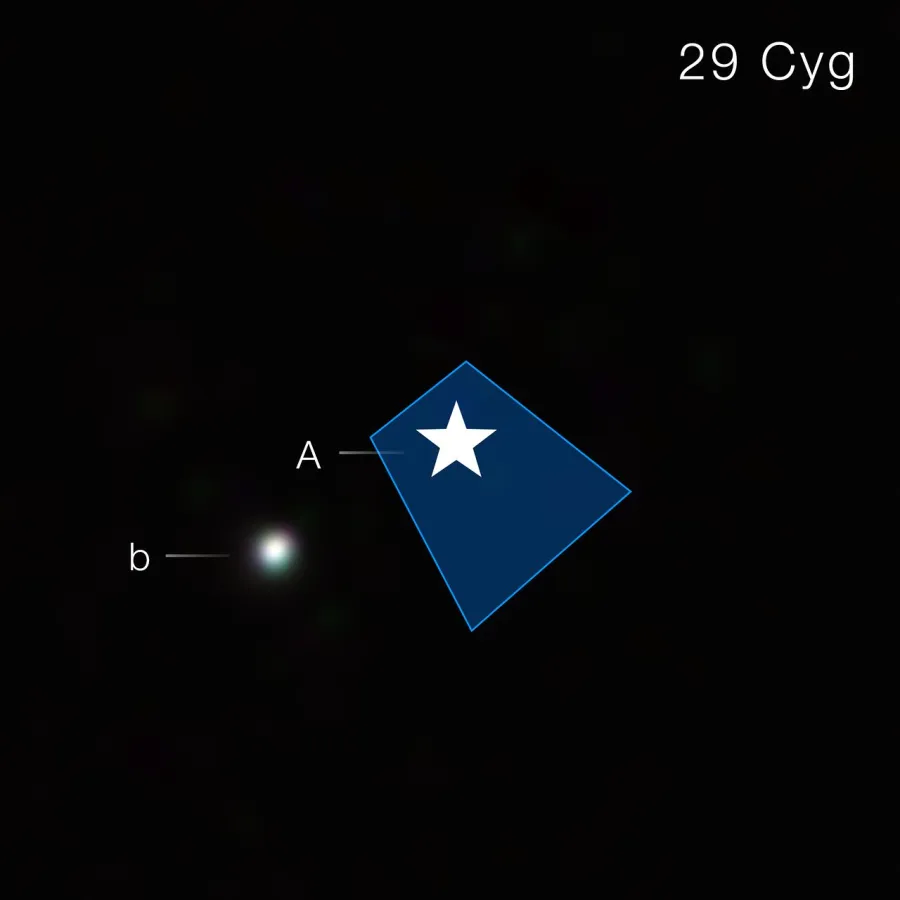

April 14, 2026
Webb images 29 Cygni b: formed like a planet
The NIRCam near-infrared camera of the James Webb Space Telescope has imaged the companion 29 Cygni b (also HIP 99770 b) in its coronagraphic mode. In the image a star symbol marks the blocked star and the blue box the coronagraph mask; the planet is the whitish dot at the lower left.
The object has about 15 Jupiter masses and orbits its star at a distance of about 2.4 billion kilometers, similar to Uranus around the Sun. The images show absorption by carbon dioxide and carbon monoxide; according to ESA/Webb, the enrichment in heavy elements suggests that it formed like a planet within a disk – not like a star.
Sources: ESA/Webb: "Webb redefines dividing line between planets and stars" (weic2607)., 2026-04-14; ESA/Webb: "Exoplanet 29 Cygni b (NIRCam image)" (image weic2607b)., 2026-04-14; University of Arizona research portal: abstract of Balmer et al., "Direct Images of CO2 Absorption in the Atmosphere of a Super-Jupiter ..." (states "29 Cygni (=HIP 99770)")., 2026